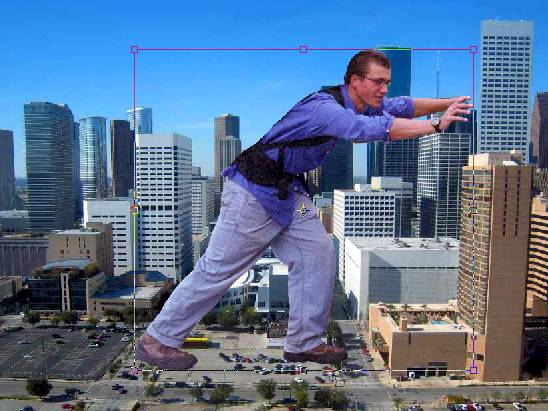
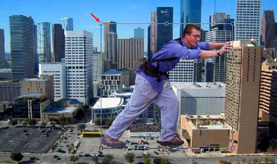
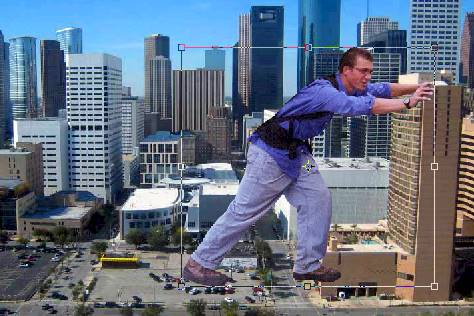
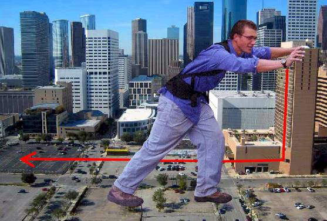

If things don't line up like the above image, continue to resize and move him as needed until his feet are in the proper position and his hand is at the corner of the building
|
Step 1: Intro
| Step 2:
Selecting | Step
3: Guy in City |
Step 4: Making
Adjustments | Step
5: Shadow |
Exercise |
| Creating a Giant in Photopea: Putting our Giant in the City |
We now need to get our guy onto our city. There are several different ways we can pull this off, but one of the easiest is simply using copy/paste (if you want to use a different method go for it!).
We want him to be pushing on the tan colored building on the right, so let's flip him around.
We now need to move him into place. Our goal here is that it looks like he is pushing the tan colored building on the right. We can't just place him so that his hands are touching the building because his feet will not line up with the building...

We need to adjust him so that his feet are on the red line and his hands rest on the top of the building
He should now be in place, but you may notice that we have a few problems. His forward foot is in front of the building when it should be in the middle of it, and his left arm appears to go nowhere. In the next step we will make some adjustments to his body so that the scene looks more realistic.
At this point, we have made some pretty big changes, so let's save our image as a psd file in case we need to close it and come back to it later.
Close the Giant1 image (the picture of the guy pushing the car) - if Photopea prompts you that you have unsaved work in the image and asks if you really want to close it, click OK
In the Giant0 image (the city image that should now include your guy), click File and then click Save as PSD...
Save the image as GIANT.psd in the GIANT folder you created in Step 1
|
Step 1: Intro
| Step 2:
Selecting | Step
3: Guy in City |
Step 4: Making
Adjustments | Step
5: Shadow |
Exercise |